Get started with Campaign Management
Uptempo Campaign Management is the system of record for your marketing activities. Use it to plan your marketing campaigns, connect initiatives to funding, and track how your plans are performing.
Activities and the activity hierarchy
Activities are the basic building block of your marketing plans. You can create different types of activities for various purposes.
Some types of activities represent specific marketing tactics, such as ads, email blasts, or trade show booths. Other types of activities organize your marketing plans into a multi-level structure: for example, you can create an activity to represent a broader campaign, and use that campaign activity to group the various initiatives you plan to execute as part of the campaign.
In Uptempo, these activities and how they are structured into an overall plan are called the activity hierarchy. You manage the activity hierarchy and the activities within it in the  Activities section of Uptempo.
Activities section of Uptempo.
Open the Activities section
To open the
 Activities section, click Activities in the navigation sidebar menu.
Activities section, click Activities in the navigation sidebar menu.
To learn more about how activities and the activity hierarchy work, see About activities and the activity hierarchy.
Activities overview
the  Activities section consists of the following areas:
Activities section consists of the following areas:
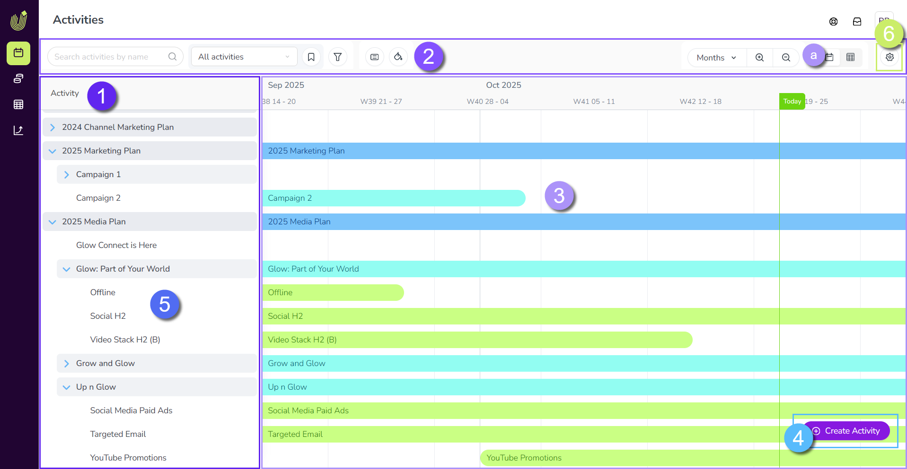
Activity hierarchy: Your list of marketing activities, organized into a hierarchical parent-child structure (for example into plans, campaigns, tactics, etc.).
Toolbar: Use these controls to set which activities are visible, and how they are displayed. The toolbar includes controls for searching, filtering, color-coding, switching between display modes, and more.
Activity display: Shows information about the activities in the hierarchy. At any time, you can switch between two different display modes for the activity hierarchy:
Timeline (shown): A chronological view of your marketing activities (based on their in-market dates), in which activities are represented as bars on a timeline.
Summary: A customizable table view that shows the details of your marketing activities at a glance:
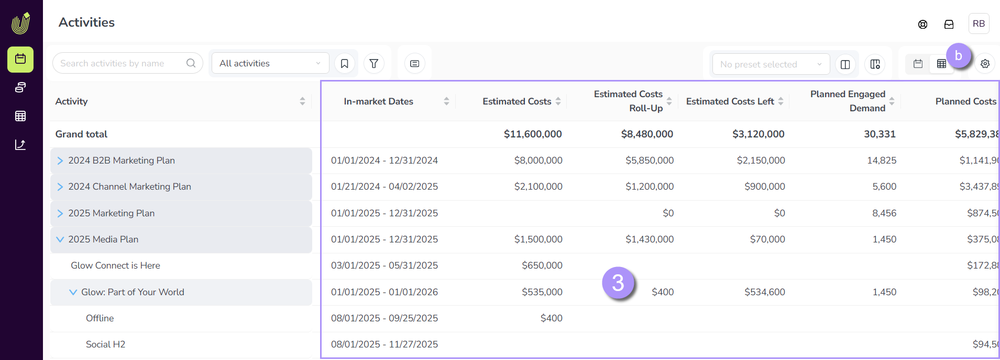
Activity setup assistant: Click
 Create Activity to open the activity setup assistant, which guides you through the process of creating a new activity:
Create Activity to open the activity setup assistant, which guides you through the process of creating a new activity: 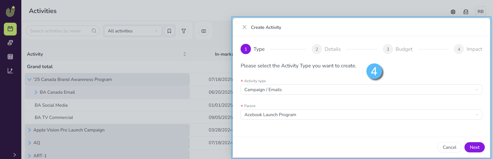
Activity details panel: Click any existing activity to view detailed information about it in the details panel. You can use an activity's details panel to see its attributes and set their values, connect and manage funding, record performance data, and more:
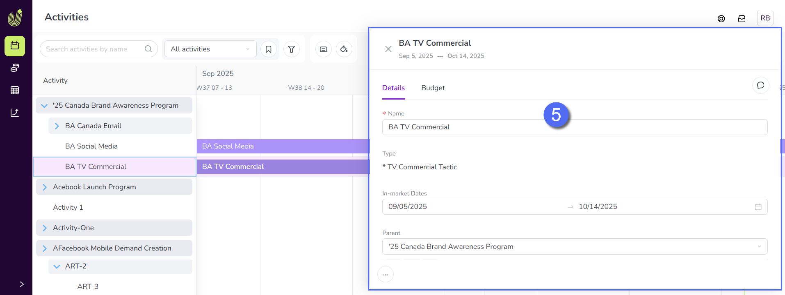
Activity configuration: Settings for administrators to configure Uptempo Campaign Management and the activity hierarchy.
{kind=link}
{kind=link}
{kind=link}
Navigate the activity hierarchy
Activities in Uptempo Campaign Management are organized into levels according to the hierarchy structure your organization has set up. For example, you might have a structure like this:
Plan X
Campaign A
Program 1
Tactic i
Tactic ii
Program 2
...
Campaign B
...
Plan Y
...
To represent this tree-like structure, the activity hierarchy is displayed as a nested list in which the names of all available activities are shown in alphanumeric order (0-9, A-Z).
The activity hierarchy is always visible in the  Activities section, under the heading Activity:
Activities section, under the heading Activity: 
Hide or show branches of the activity hierarchy
You can expand the activities at each level to view the activities at the level below (and collapse them to hide the lower levels).
To hide an activity's child activities:
Click Collapse on an activity whose children are shown. All activities under that activity are hidden.
To show an activity's child activities:
Click
 Expand on an activity whose children are hidden. All activities under that activity are shown.
Expand on an activity whose children are hidden. All activities under that activity are shown.
Change the width of the activity hierarchy panel
If you need more space to view the names of the activities (for example, at lower levels of the hierarchy) you can change the width of the activity hierarchy.
To change the width of the activity hierarchy panel
Place the pointer on the border of the activity hierarchy area, then drag the handle left or right to change the width:

Change display modes
The Activities section has two different display modes, which give you different ways of viewing the details of activities in your activity hierarchy:
- Timeline
Gives you a chronological overview of when your activities are in-market.
- Summary
Lets you see more details about your activities in a table.
Timeline
The Timeline display mode provides an overview of your activities in a calendar-style timeline. Activities are represented on the timeline as horizontal bars based on their in-market dates, with today's date marked by a vertical green line:
{kind=link}
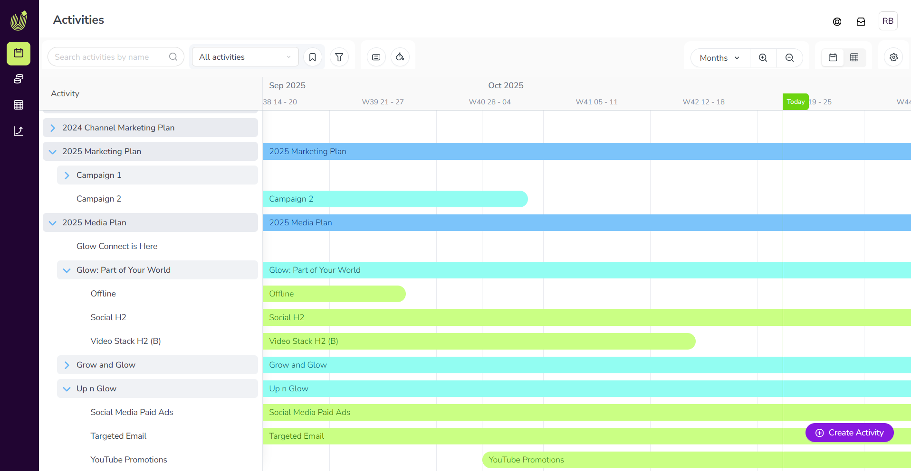
Switch to Timeline display mode
Set the Timeline/Summary toggle button to the  Timeline setting:
Timeline setting:
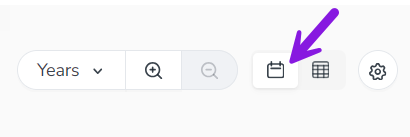
Adjust the timescale
You can adjust the size of the timescale displayed to your needs.
Use the Select Timeline Scale menu and the zoom controls in the toolbar:
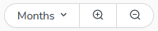
You can select a timescale (such as months or quarters) directly from the menu, or use
 Zoom In and
Zoom In and  Zoom Out to switch between scales.
Zoom Out to switch between scales.
The Timeline displays two time scales: a major and minor scale. The timescale setting controls the major scale, and the minor scale is always automatically set to the next-lower scale setting (except for the smallest scale setting, Days).
For example, here the timescale is set to Years, so the major scale is Years and the minor scale is Quarters:

Summary
The Summary display mode provides an overview of your activities. It consists of a customizable table that displays detailed budget, performance, and other data for each activity. You can use the Summary display mode to compare activities against each other, evaluate activity performance, and compare cost and spend data at a glance.
{kind=link}
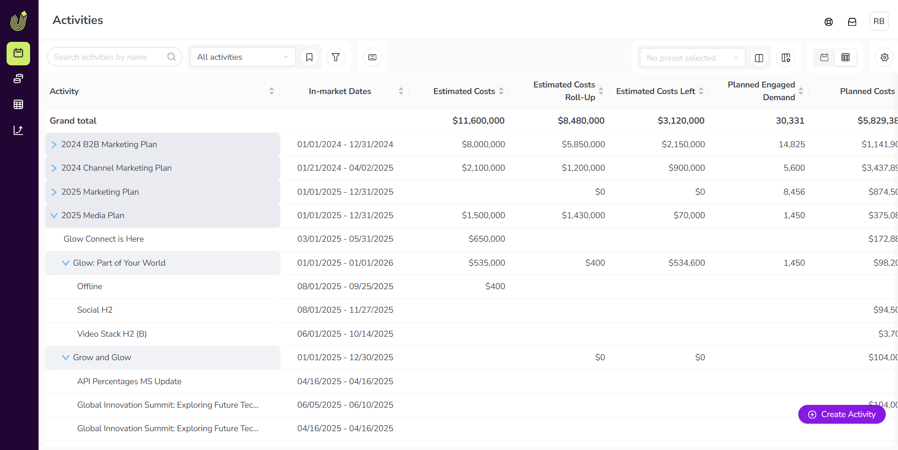
Switch to Summary display mode
Set the Timeline/Summary toggle button to the  Summary setting.
Summary setting.
The columns in the Summary table are customizable, so you can choose what information you want to see. To learn more about customizing the columns, see Customize Summary table columns.
Customize display settings
You can use the display settings in the toolbar of the  Activities section to customize the activity hierarchy to your needs. Use these settings to control which activities are visible in the activity hierarchy, and how those activities are displayed.
Activities section to customize the activity hierarchy to your needs. Use these settings to control which activities are visible in the activity hierarchy, and how those activities are displayed.
Most of the display settings controls in the toolbar are available for both of the display modes (Timeline and Summary). Some toolbar controls are specific to a display mode and are only shown when that display mode is active.
The following toolbar controls are available in both the Timeline and Summary display modes:
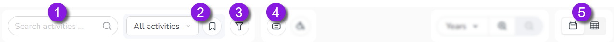
- 1. Search activities field
Search for activities by name or ID. Type in a keyword to filter the activity hierarchy to display only activities whose name contains the keyword.
- 2. Select View menu and
 View Options
View Options Create, manage, and select views, which let you save and quickly apply display setting configurations (such as filters, groupings, color coding, etc.).
For more information, see Save activity display settings as a view
- 3.
 Filter Activities
Filter Activities Filter the activity hierarchy to only display activities that match selected criteria.
For more information, see Filter activities.
- 4.
 Group Activities
Group Activities Group the activities in the hierarchy based on their values for a selected attribute.
For more information, see Group activities.
- 5. Timeline / Summary toggle
Switches the selected display mode between
Timeline and  Summary.
Summary.- 6.
 Show Parent Activities
Show Parent Activities Reveals the parent activities of visible activities when filters are applied to the activity hierarchy. This setting is useful for seeing where each visible activity is located within the overall hierarchy, as this context is usually hidden when the activity hierarchy is filtered.
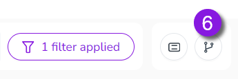
The following toolbar controls are only available when the Timeline display mode is used:
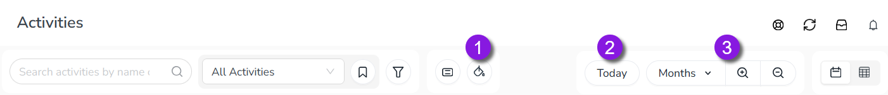
- 1.
 Select Color-Coding
Select Color-Coding Color-code the activity bars in the timeline based on a selected attribute to make it easier to tell activities apart at a glance. Select an attribute to color the activity bars based on which value the activity has set for that attribute.
For more information, see Color-code Timeline activity bars.
- 2. Select Timeline Scale menu and Zoom In / Zoom Out
Select the timescale used for the Timeline display mode directly, or zoom in to shorter time scales,
The following toolbar controls are only available when the Summary display mode is used:
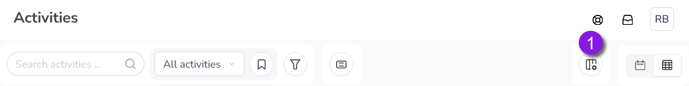
- 1. Configure Columns
Select which columns are displayed in the Summary table, and in what order.
For more information, see Customize Summary table columns.
The following toolbar controls are only available to administrator users:
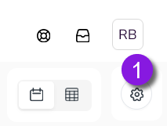
- 1.
 Settings
Settings Opens the Activity Configuration page, where administrators can configure Uptempo Campaign Management settings.
For more information, see Campaign Management configuration overview.
Create activities
When you want to add a new activity to the hierarchy, you can do this from either the Timeline or Summary display modes at any time. The activity setup assistant walks you through the process of setting up a new activity step-by-step.
Create a new activity
Click
Create Activity to open the activity setup assistant.On each step of the activity setup assistant, use the form fields to configure the activity's type, placement, and details, then click Next to proceed to the next step:
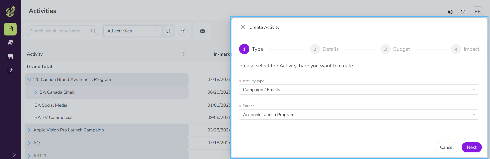
On the last step, click Submit to finish creating the activity. The new activity is added to the hierarchy.
{kind=link}
For detailed instructions on how to create and configure activities, see Create activities.
View an activity's details
For any activity that you have access to, you can view its details (and make changes to the activity) at any time. To do this, open the activity to view its activity details panel. The activity details panel is always available in both Timeline or Summary display modes.
Open an activity's details panel
To open an activity's details panel, click on the activity's name in the activity hierarchy panel. The details panel opens on the right:
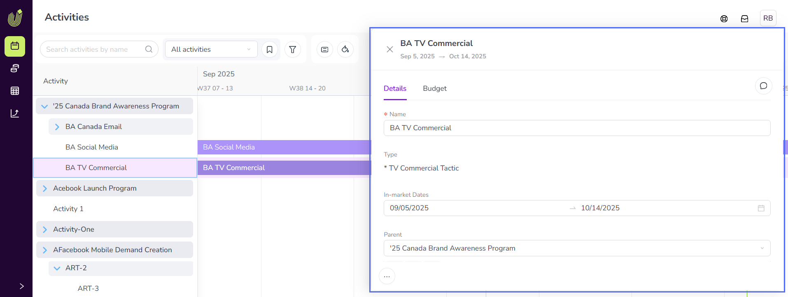
Use the tabs in the details panel to navigate between different types of activity data:
- Details
Shows all the activity's attributes (and their current values), as well as attributes and values inherited from parent activities. For more details, see Activity types and attributes.
- Budget
Shows financial data about the activity, such as related costs and connected investments. For more details, see Track and analyze activity budgets.
- Impact
Shows the activity's planned and actual impact on the marketing pipeline. For more details, see Track and analyze pipeline impact.
- KPIs
Shows the activity's planned and actual performance on assigned KPI metrics. For more details, see Track and analyze KPIs.
To close the details panel, click
 Close beside the activity's name (or click anywhere outside the details panel).
Close beside the activity's name (or click anywhere outside the details panel).
{kind=link}